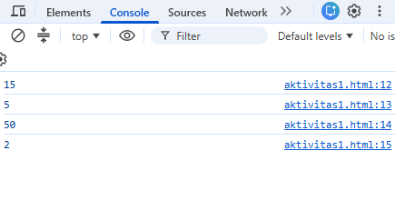
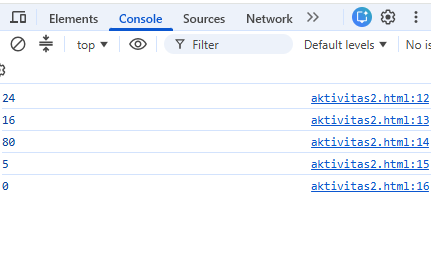
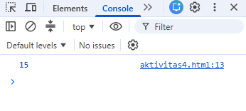
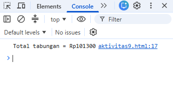
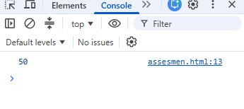

B. LKPD – Input, Output & Operator
Petunjuk
- Kerjakan berurutan.
- Jalankan setiap kode dan amati hasilnya.
- Pahami fungsi setiap baris, jangan sekadar menyalin.
- Jika error, baca pesan error dan cari penyebabnya.
- Diskusikan bagian yang sulit dengan pasangan/kelompok.
Aktivitas 1 – Prediksi
let a = 10;
let b = 5;
console.log(a + b);
console.log(a - b);
console.log(a * b);
console.log(a / b);

| Operasi | Prediksi | Hasil sebenarnya |
|---|---|---|
| a + b | 15 | 15 |
| a - b | 5 | 5 |
| a * b | 50 | 50 |
| a / b | 2 | 2 |
Apakah prediksi kamu benar? ☑ Ya ☐ Sebagian ☐ Tidak
Aktivitas 2 – Eksperimen
let a = 20;
let b = 4;
console.log(a + b);
console.log(a - b);
console.log(a * b);
console.log(a / b);
console.log(a % b);

Prediksi:
| a + b | a - b | a * b | a / b | a % b |
|---|---|---|---|---|
| 24 | 16 | 80 | 5 | 0 |
% (modulus) menghasilkan sisa pembagian. Karena 20 habis dibagi 4 (20 / 4 = 5 tanpa sisa), maka hasil 20 % 4 adalah 0.Aktivitas 3 – Input dengan prompt()
let nama = prompt("Masukkan nama:");
console.log(nama);
let umur = prompt("Masukkan umur:");
console.log(umur);
.png)
prompt() menampilkan kotak dialog yang meminta pengguna mengetik data (input). Data yang diketik disimpan ke dalam variable (berupa teks/string) lalu bisa ditampilkan dengan console.log().Aktivitas 4 – Menghitung Umur
let tahunLahir = prompt("Masukkan tahun lahir:");
let tahunSekarang = 2026;
let umur = tahunSekarang - tahunLahir;
console.log(umur);

Uji dengan tahun lahir kamu.
Aktivitas 5 – Mesin Kasir Mini
let harga = prompt("Masukkan harga:");
let jumlah = prompt("Masukkan jumlah:");
let total = harga * jumlah;
console.log(total);
.png)
Uji: Harga = 5000, Jumlah = 4.
Aktivitas 6 – Think Pair Share
THINK: Mengapa membutuhkan variable total?
total dipakai untuk menyimpan hasil perhitungan (harga × jumlah) agar bisa ditampilkan, dipakai lagi pada perhitungan berikutnya (misalnya diskon), dan membuat kode lebih mudah dibaca.PAIR: Jawaban sama? ☑ Ya ☐ Tidak
SHARE: Kesimpulan kelompok:
Aktivitas 7 – Challenge: Warung Digital
Buat program yang meminta nama makanan, harga, dan jumlah. Tampilkan nama, harga, jumlah, dan total.
let makanan = prompt("Nama makanan:");
let harga = prompt("Harga:");
let jumlah = prompt("Jumlah:");
let total = harga * jumlah;
console.log(makanan);
console.log(harga);
console.log(jumlah);
console.log(total);Kembangkan dengan diskon 10%:
let diskon = total * 10 / 100;
let bayar = total - diskon;
Tampilkan Total, Diskon, Total Bayar.
let makanan = prompt("Nama makanan:");
let harga = prompt("Harga:");
let jumlah = prompt("Jumlah:");
let total = harga * jumlah;
let diskon = total * 10 / 100;
let bayar = total - diskon;
console.log("Nama makanan:", makanan);
console.log("Harga:", harga);
console.log("Jumlah:", jumlah);
console.log("Total:", total);
console.log("Diskon (10%):", diskon);
console.log("Total Bayar:", bayar);
.png)
Aktivitas 8 – Debugging
let harga = 5000;
let jumlah = 3;
let total harga = harga * jumlah;
console.log(total harga);total harga mengandung spasi. Nama variable tidak boleh memakai spasi, sehingga muncul error (SyntaxError).let harga = 5000;
let jumlah = 3;
let totalHarga = harga * jumlah;
console.log(totalHarga);
.png)
Aktivitas 9 – Challenge Mandiri: Kalkulator Tabungan
Buat program yang meminta uang awal, tabungan hari pertama, kedua, dan ketiga, lalu menghitung total.
let uangAwal = Number(prompt("Masukkan uang awal:"));
let hari1 = Number(prompt("Tabungan hari pertama:"));
let hari2 = Number(prompt("Tabungan hari kedua:"));
let hari3 = Number(prompt("Tabungan hari ketiga:"));
let totalTabungan = uangAwal + hari1 + hari2 + hari3;
console.log("Total tabungan = Rp", totalTabungan);

C. Bahan Ajar
1. Mengingat Variable
Variable adalah tempat untuk menyimpan data.
let nama = "Budi";
let umur = 17;
let nilai = 85;2. Input – Process – Output
let harga = 5000;
let jumlah = 3;
let total = harga * jumlah;
console.log(total);3. Output dengan console.log()
console.log("Halo");
let nama = "Budi";
console.log(nama);
console.log("Nama saya adalah", nama);4. Input dengan prompt()
let nama = prompt("Masukkan nama:");
console.log(nama);Alur: Pengguna mengetik → prompt() → variable → console.log().
5. Operator Aritmatika
| Operator | Fungsi | Contoh | Hasil |
|---|---|---|---|
+ | Penjumlahan | 10 + 5 | 15 |
- | Pengurangan | 10 - 5 | 5 |
* | Perkalian | 10 * 5 | 50 |
/ | Pembagian | 10 / 5 | 2 |
% | Sisa pembagian | 10 % 3 | 1 |
6. Variable dalam Perhitungan
let nilai1 = 80;
let nilai2 = 90;
let total = nilai1 + nilai2;
console.log(total);7. Contoh Kehidupan Nyata
Harga satu buku Rp10.000 dan membeli 3 buku:
let harga = 10000;
let jumlah = 3;
let total = harga * jumlah;
console.log(total);Hasilnya 30000.
8. Pola Dasar Program
let data1 = ...;
let data2 = ...;
let hasil = data1 OPERASI data2;
console.log(hasil);let panjang = 10;
let lebar = 5;
let luas = panjang * lebar;
console.log(luas);9. Catatan tentang prompt()
Hasil prompt() secara umum diterima sebagai teks/string. Untuk mengubahnya menjadi angka dapat digunakan Number().
let angka = Number(prompt("Masukkan angka:"));D. Asesmen Formatif
Apa output dari let a = 8; let b = 2; console.log(a + b);?
Apa output dari let a = 10; let b = 3; console.log(a % b);?
Apa fungsi prompt()?
Buat program menghitung luas persegi panjang dengan panjang 10 dan lebar 5.
let panjang = 10;
let lebar = 5;
let luas = panjang * lebar;
console.log(luas); // 50

E. Rubrik Penilaian
| Aspek | 1 | 2 | 3 | 4 |
|---|---|---|---|---|
| Memahami input-output | ||||
| Penggunaan variable | ||||
| Penggunaan operator | ||||
| Penggunaan prompt() | ||||
| Ketepatan program | ||||
| Debugging | ||||
| Kemandirian | ||||
| Kreativitas |
Keterangan: 4 = mandiri dan benar; 3 = benar dengan sedikit bantuan; 2 = masih membutuhkan bimbingan; 1 = belum mampu.
(Kolom nilai diisi oleh guru.)
F. Refleksi Pembelajaran Mendalam
Berkesadaran: Hari ini saya menyadari bahwa ...
Bermakna: Materi ini dapat digunakan untuk ...
Menggembirakan: Bagian pembelajaran yang paling saya sukai ...
G. Exit Ticket
1. Satu hal yang sudah saya kuasai:
2. Satu hal yang masih membingungkan:
3. Satu hal yang ingin saya coba: